爬虫框架Scrapy的第一个爬虫示例入门教程
我们使用dmoz.org这个网站来作为小抓抓一展身手的对象。
首先先要回答一个问题。
问：把网站装进爬虫里，总共分几步？
答案很简单，四步：
- 新建项目 (Project)：新建一个新的爬虫项目
- 明确目标（Items）：明确你想要抓取的目标
- 制作爬虫（Spider）：制作爬虫开始爬取网页
- 存储内容（Pipeline）：设计管道存储爬取内容
好的，基本流程既然确定了，那接下来就一步一步的完成就可以了。
1.新建项目（Project）
在空目录下按住Shift键右击，选择“在此处打开命令窗口”，输入一下命令：
- scrapy startproject tutorial
其中，tutorial为项目名称。
可以看到将会创建一个tutorial文件夹，目录结构如下：
- tutorial/
- scrapy.cfg
- tutorial/
- __init__.py
- items.py
- pipelines.py
- settings.py
- spiders/
- __init__.py
- ...
下面来简单介绍一下各个文件的作用：
- scrapy.cfg：项目的配置文件
- tutorial/：项目的Python模块，将会从这里引用代码
- tutorial/items.py：项目的items文件
- tutorial/pipelines.py：项目的pipelines文件
- tutorial/settings.py：项目的设置文件
- tutorial/spiders/：存储爬虫的目录
2.明确目标（Item）
在Scrapy中，items是用来加载抓取内容的容器，有点像Python中的Dic，也就是字典，但是提供了一些额外的保护减少错误。
一般来说，item可以用scrapy.item.Item类来创建，并且用scrapy.item.Field对象来定义属性（可以理解成类似于ORM的映射关系）。
接下来，我们开始来构建item模型（model）。
首先，我们想要的内容有：
- 名称（name）
- 链接（url）
- 描述（description）
修改tutorial目录下的items.py文件，在原本的class后面添加我们自己的class。
因为要抓dmoz.org网站的内容，所以我们可以将其命名为DmozItem：
- # Define here the models for your scraped items
- #
- # See documentation in:
- # http://doc.scrapy.org/en/latest/topics/items.html
- from scrapy.item import Item, Field
- class TutorialItem(Item):
- # define the fields for your item here like:
- # name = Field()
- pass
- class DmozItem(Item):
- title = Field()
- link = Field()
- desc = Field()
刚开始看起来可能会有些看不懂，但是定义这些item能让你用其他组件的时候知道你的 items到底是什么。
可以把Item简单的理解成封装好的类对象。
3.制作爬虫（Spider）
制作爬虫，总体分两步：先爬再取。
也就是说，首先你要获取整个网页的所有内容，然后再取出其中对你有用的部分。
3.1爬
Spider是用户自己编写的类，用来从一个域（或域组）中抓取信息。
他们定义了用于下载的URL列表、跟踪链接的方案、解析网页内容的方式，以此来提取items。
要建立一个Spider，你必须用scrapy.spider.BaseSpider创建一个子类，并确定三个强制的属性：
- name：爬虫的识别名称，必须是唯一的，在不同的爬虫中你必须定义不同的名字。
- start_urls：爬取的URL列表。爬虫从这里开始抓取数据，所以，第一次下载的数据将会从这些urls开始。其他子URL将会从这些起始URL中继承性生成。
- parse()：解析的方法，调用的时候传入从每一个URL传回的Response对象作为唯一参数，负责解析并匹配抓取的数据(解析为item)，跟踪更多的URL。
这里可以参考宽度爬虫教程中提及的思想来帮助理解，教程传送：[Java] 知乎下巴第5集：使用HttpClient工具包和宽度爬虫。
也就是把Url存储下来并依此为起点逐步扩散开去，抓取所有符合条件的网页Url存储起来继续爬取。
下面我们来写第一只爬虫，命名为dmoz_spider.py，保存在tutorial\spiders目录下。
dmoz_spider.py代码如下：
- from scrapy.spider import Spider
- class DmozSpider(Spider):
- name = "dmoz"
- allowed_domains = ["dmoz.org"]
- start_urls = [
- "http://www.dmoz.org/Computers/Programming/Languages/Python/Books/",
- "http://www.dmoz.org/Computers/Programming/Languages/Python/Resources/"
- ]
- def parse(self, response):
- filename = response.url.split("/")[-2]
- open(filename, 'wb').write(response.body)
allow_domains是搜索的域名范围，也就是爬虫的约束区域，规定爬虫只爬取这个域名下的网页。
从parse函数可以看出，将链接的最后两个地址取出作为文件名进行存储。
然后运行一下看看，在tutorial目录下按住shift右击，在此处打开命令窗口，输入：
- scrapy crawl dmoz
运行结果如图：
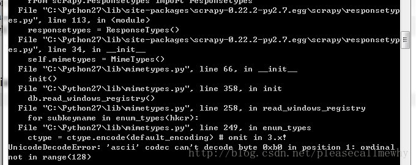
报错了：
UnicodeDecodeError: 'ascii' codec can't decode byte 0xb0 in position 1: ordinal not in range(128)
运行第一个Scrapy项目就报错，真是命运多舛。
应该是出了编码问题，谷歌了一下找到了解决方案：
在python的Lib\site-packages文件夹下新建一个sitecustomize.py：
- import sys
- sys.setdefaultencoding('gb2312')
再次运行，OK，问题解决了，看一下结果：
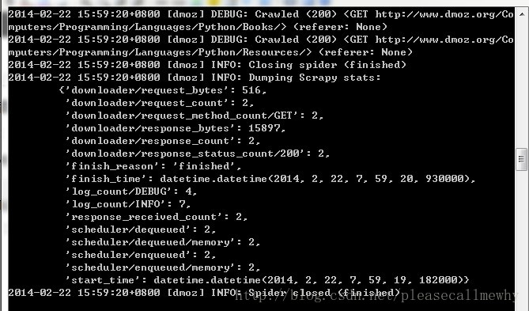
最后一句INFO: Closing spider (finished)表明爬虫已经成功运行并且自行关闭了。
包含 [dmoz]的行 ，那对应着我们的爬虫运行的结果。
可以看到start_urls中定义的每个URL都有日志行。
还记得我们的start_urls吗？
http://www.dmoz.org/Computers/Programming/Languages/Python/Books
http://www.dmoz.org/Computers/Programming/Languages/Python/Resources
因为这些URL是起始页面，所以他们没有引用(referrers)，所以在它们的每行末尾你会看到 (referer: <None>)。
在parse 方法的作用下，两个文件被创建：分别是 Books 和 Resources，这两个文件中有URL的页面内容。
那么在刚刚的电闪雷鸣之中到底发生了什么呢？
首先，Scrapy为爬虫的 start_urls属性中的每个URL创建了一个 scrapy.http.Request 对象 ，并将爬虫的parse 方法指定为回调函数。
然后，这些 Request被调度并执行，之后通过parse()方法返回scrapy.http.Response对象，并反馈给爬虫。
3.2取
爬取整个网页完毕，接下来的就是的取过程了。
光存储一整个网页还是不够用的。
在基础的爬虫里，这一步可以用正则表达式来抓。
在Scrapy里，使用一种叫做 XPath selectors的机制，它基于 XPath表达式。
如果你想了解更多selectors和其他机制你可以查阅资料：点我点我
这是一些XPath表达式的例子和他们的含义
- /html/head/title: 选择HTML文档<head>元素下面的<title> 标签。
- /html/head/title/text(): 选择前面提到的<title> 元素下面的文本内容
- //td: 选择所有 <td> 元素
- //div[@class="mine"]: 选择所有包含 class="mine" 属性的div 标签元素
以上只是几个使用XPath的简单例子，但是实际上XPath非常强大。
可以参照W3C教程：点我点我。
为了方便使用XPaths，Scrapy提供XPathSelector 类，有两种可以选择，HtmlXPathSelector(HTML数据解析)和XmlXPathSelector(XML数据解析)。
必须通过一个 Response 对象对他们进行实例化操作。
你会发现Selector对象展示了文档的节点结构。因此，第一个实例化的selector必与根节点或者是整个目录有关 。
在Scrapy里面，Selectors 有四种基础的方法（点击查看API文档）：
- xpath()：返回一系列的selectors，每一个select表示一个xpath参数表达式选择的节点
- css()：返回一系列的selectors，每一个select表示一个css参数表达式选择的节点
- extract()：返回一个unicode字符串，为选中的数据
- re()：返回一串一个unicode字符串，为使用正则表达式抓取出来的内容
3.3xpath实验
下面我们在Shell里面尝试一下Selector的用法。
实验的网址：http://www.dmoz.org/Computers/Programming/Languages/Python/Books/
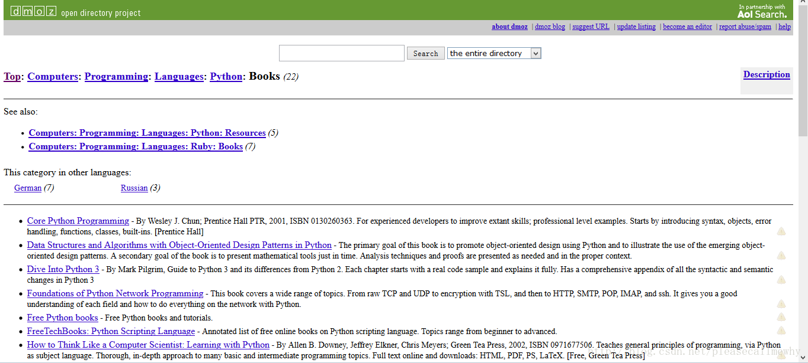
熟悉完了实验的小白鼠，接下来就是用Shell爬取网页了。
进入到项目的顶层目录，也就是第一层tutorial文件夹下，在cmd中输入：
- scrapy shell http://www.dmoz.org/Computers/Programming/Languages/Python/Books/
回车后可以看到如下的内容：
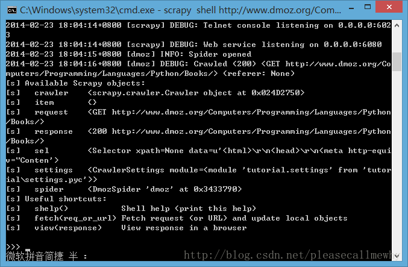
在Shell载入后，你将获得response回应，存储在本地变量 response中。
所以如果你输入response.body，你将会看到response的body部分，也就是抓取到的页面内容：
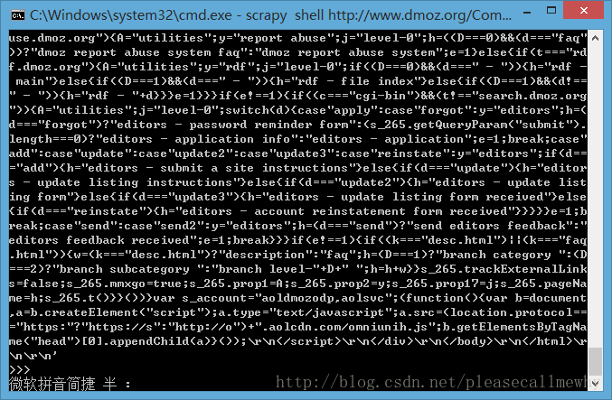
或者输入response.headers 来查看它的 header部分：
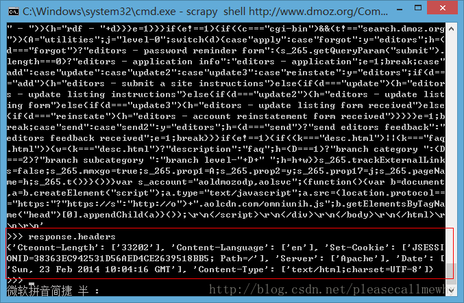
现在就像是一大堆沙子握在手里，里面藏着我们想要的金子，所以下一步，就是用筛子摇两下，把杂质出去，选出关键的内容。
selector就是这样一个筛子。
在旧的版本中，Shell实例化两种selectors，一个是解析HTML的 hxs 变量，一个是解析XML 的 xxs 变量。
而现在的Shell为我们准备好的selector对象，sel，可以根据返回的数据类型自动选择最佳的解析方案(XML or HTML)。
然后我们来捣弄一下！~
要彻底搞清楚这个问题，首先先要知道，抓到的页面到底是个什么样子。
比如，我们要抓取网页的标题，也就是<title>这个标签：
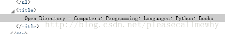
可以输入：
- sel.xpath('//title')
结果就是：
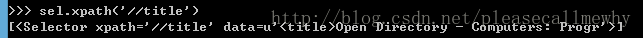
这样就能把这个标签取出来了，用extract()和text()还可以进一步做处理。
备注：简单的罗列一下有用的xpath路径表达式：
| 表达式 | 描述 |
|---|---|
| nodename | 选取此节点的所有子节点。 |
| / | 从根节点选取。 |
| // | 从匹配选择的当前节点选择文档中的节点，而不考虑它们的位置。 |
| . | 选取当前节点。 |
| .. | 选取当前节点的父节点。 |
| @ | 选取属性。 |
全部的实验结果如下，In[i]表示第i次实验的输入，Out[i]表示第i次结果的输出（建议大家参照：W3C教程）：
- In [1]: sel.xpath('//title')
- Out[1]: [<Selector xpath='//title' data=u'<title>Open Directory - Computers: Progr'>]
- In [2]: sel.xpath('//title').extract()
- Out[2]: [u'<title>Open Directory - Computers: Programming: Languages: Python: Books</title>']
- In [3]: sel.xpath('//title/text()')
- Out[3]: [<Selector xpath='//title/text()' data=u'Open Directory - Computers: Programming:'>]
- In [4]: sel.xpath('//title/text()').extract()
- Out[4]: [u'Open Directory - Computers: Programming: Languages: Python: Books']
- In [5]: sel.xpath('//title/text()').re('(\w+):')
- Out[5]: [u'Computers', u'Programming', u'Languages', u'Python']
当然title这个标签对我们来说没有太多的价值，下面我们就来真正抓取一些有意义的东西。
使用火狐的审查元素我们可以清楚地看到，我们需要的东西如下：
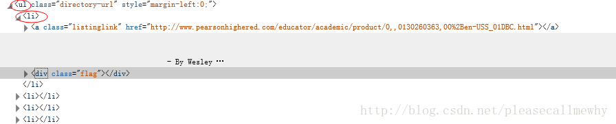
我们可以用如下代码来抓取这个<li>标签：
- sel.xpath('//ul/li')
从<li>标签中，可以这样获取网站的描述：
- sel.xpath('//ul/li/text()').extract()
可以这样获取网站的标题：
- sel.xpath('//ul/li/a/text()').extract()
可以这样获取网站的超链接：
- sel.xpath('//ul/li/a/@href').extract()
当然，前面的这些例子是直接获取属性的方法。
我们注意到xpath返回了一个对象列表，
那么我们也可以直接调用这个列表中对象的属性挖掘更深的节点
（参考：Nesting selectors andWorking with relative XPaths in the Selectors）：
sites = sel.xpath('//ul/li')
for site in sites:
title = site.xpath('a/text()').extract()
link = site.xpath('a/@href').extract()
desc = site.xpath('text()').extract()
print title, link, desc
3.4xpath实战
我们用shell做了这么久的实战，最后我们可以把前面学习到的内容应用到dmoz_spider这个爬虫中。
在原爬虫的parse函数中做如下修改：
- from scrapy.spider import Spider
- from scrapy.selector import Selector
- class DmozSpider(Spider):
- name = "dmoz"
- allowed_domains = ["dmoz.org"]
- start_urls = [
- "http://www.dmoz.org/Computers/Programming/Languages/Python/Books/",
- "http://www.dmoz.org/Computers/Programming/Languages/Python/Resources/"
- ]
- def parse(self, response):
- sel = Selector(response)
- sites = sel.xpath('//ul/li')
- for site in sites:
- title = site.xpath('a/text()').extract()
- link = site.xpath('a/@href').extract()
- desc = site.xpath('text()').extract()
- print title
注意，我们从scrapy.selector中导入了Selector类，并且实例化了一个新的Selector对象。这样我们就可以像Shell中一样操作xpath了。
我们来试着输入一下命令运行爬虫（在tutorial根目录里面）：
scrapy crawl dmoz
运行结果如下：

果然，成功的抓到了所有的标题。但是好像不太对啊，怎么Top，Python这种导航栏也抓取出来了呢？
我们只需要红圈中的内容：
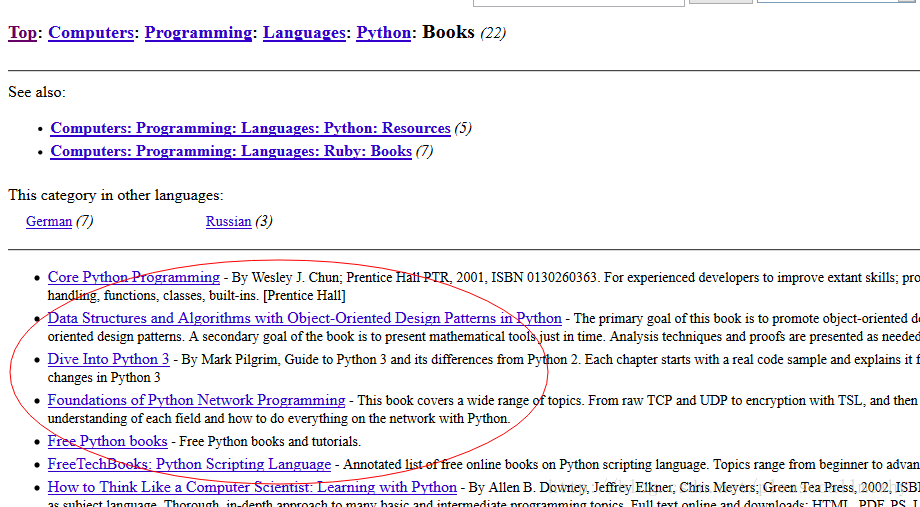
看来是我们的xpath语句有点问题，没有仅仅把我们需要的项目名称抓取出来，也抓了一些无辜的但是xpath语法相同的元素。
审查元素我们发现我们需要的<ul>具有class='directory-url'的属性，
那么只要把xpath语句改成sel.xpath('//ul[@class="directory-url"]/li')即可
将xpath语句做如下调整：
- from scrapy.spider import Spider
- from scrapy.selector import Selector
- class DmozSpider(Spider):
- name = "dmoz"
- allowed_domains = ["dmoz.org"]
- start_urls = [
- "http://www.dmoz.org/Computers/Programming/Languages/Python/Books/",
- "http://www.dmoz.org/Computers/Programming/Languages/Python/Resources/"
- ]
- def parse(self, response):
- sel = Selector(response)
- sites = sel.xpath('//ul[@class="directory-url"]/li')
- for site in sites:
- title = site.xpath('a/text()').extract()
- link = site.xpath('a/@href').extract()
- desc = site.xpath('text()').extract()
- print title
成功抓出了所有的标题，绝对没有滥杀无辜：
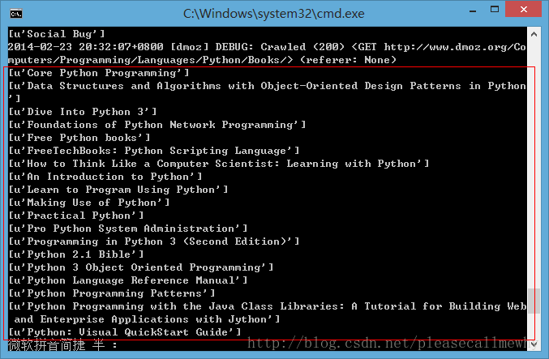
3.5使用Item
接下来我们来看一看如何使用Item。
前面我们说过，Item 对象是自定义的python字典，可以使用标准字典语法获取某个属性的值：
- >>> item = DmozItem()
- >>> item['title'] = 'Example title'
- >>> item['title']
- 'Example title'
作为一只爬虫，Spiders希望能将其抓取的数据存放到Item对象中。为了返回我们抓取数据，spider的最终代码应当是这样:
- from scrapy.spider import Spider
- from scrapy.selector import Selector
- from tutorial.items import DmozItem
- class DmozSpider(Spider):
- name = "dmoz"
- allowed_domains = ["dmoz.org"]
- start_urls = [
- "http://www.dmoz.org/Computers/Programming/Languages/Python/Books/",
- "http://www.dmoz.org/Computers/Programming/Languages/Python/Resources/"
- ]
- def parse(self, response):
- sel = Selector(response)
- sites = sel.xpath('//ul[@class="directory-url"]/li')
- items = []
- for site in sites:
- item = DmozItem()
- item['title'] = site.xpath('a/text()').extract()
- item['link'] = site.xpath('a/@href').extract()
- item['desc'] = site.xpath('text()').extract()
- items.append(item)
- return items
4.存储内容（Pipeline）
保存信息的最简单的方法是通过Feed exports，主要有四种：JSON，JSON lines，CSV，XML。
我们将结果用最常用的JSON导出，命令如下：
- scrapy crawl dmoz -o items.json -t json
-o 后面是导出文件名，-t 后面是导出类型。
然后来看一下导出的结果，用文本编辑器打开json文件即可（为了方便显示，在item中删去了除了title之外的属性）：
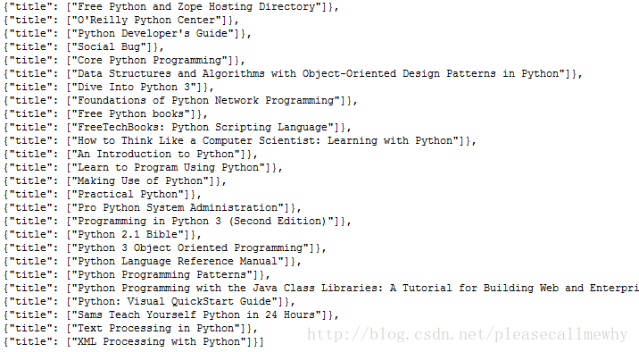
因为这个只是一个小型的例子，所以这样简单的处理就可以了。
如果你想用抓取的items做更复杂的事情，你可以写一个 Item Pipeline(条目管道)。
这个我们以后再慢慢玩^_^

【推荐】极光开发者服务平台，五大功能一站集齐
【推荐】腾讯云域名+云解析 限时折扣抓紧抢购
【推荐】阿里云“全民云计算”优惠升级
【推荐】一小时搭建人工智能应用，让技术更容易入门
· 小米与Google合作推新机？首款小米Android One手机曝光
· 出版书籍最多的是哪个国家？来看看这份报告
· 百度外卖将卖身饿了么，棋子为何会成百度弃子？
· Surface Laptop多种颜色版本在中国市场正式开售
· Eclipse基金会新增一员：红帽将把Ceylon移交给它
» 更多新闻...
· 写给立志做码农的大学生
· 架构腐化之谜
· 学会思考，而不只是编程
· 编写Shell脚本的最佳实践